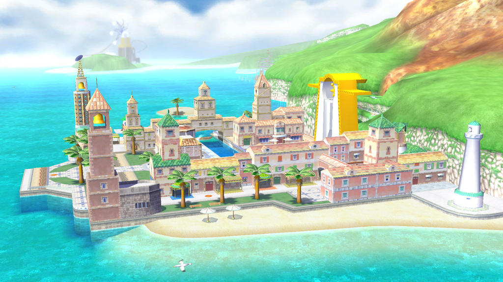
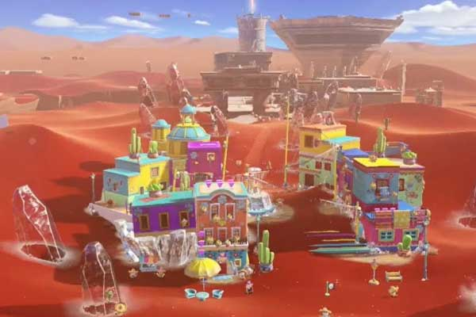
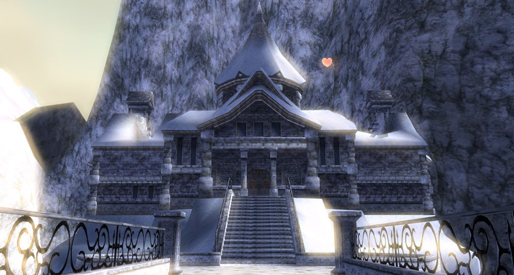
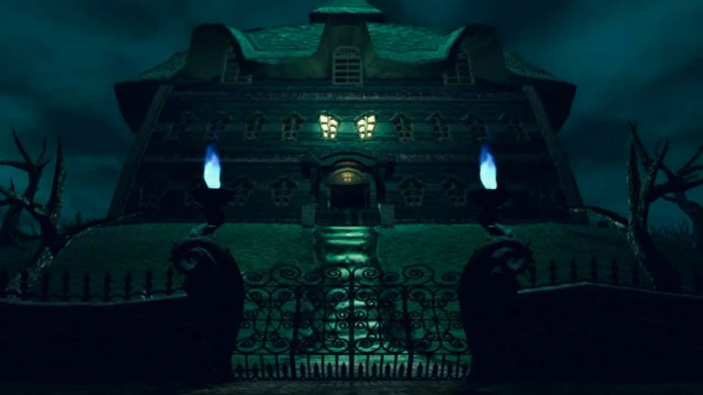
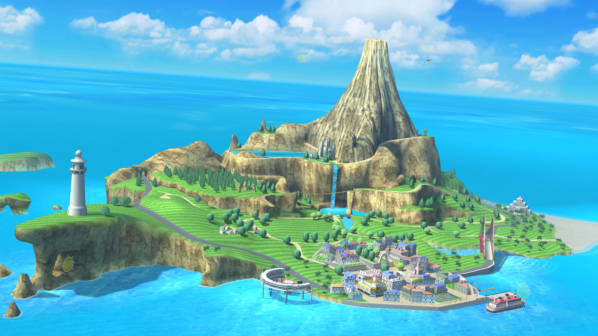
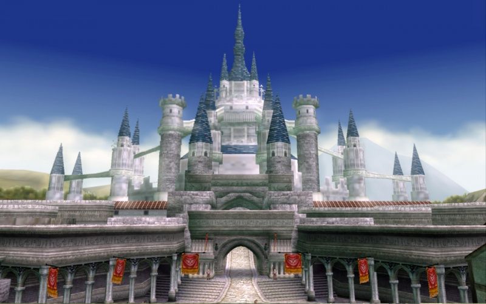
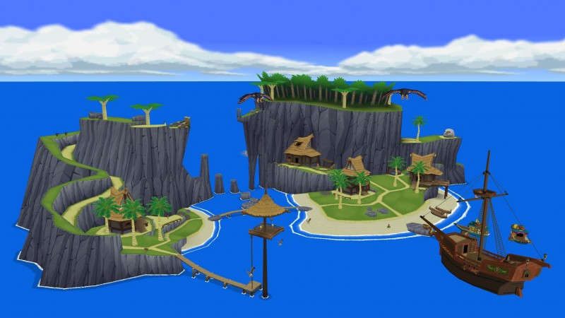
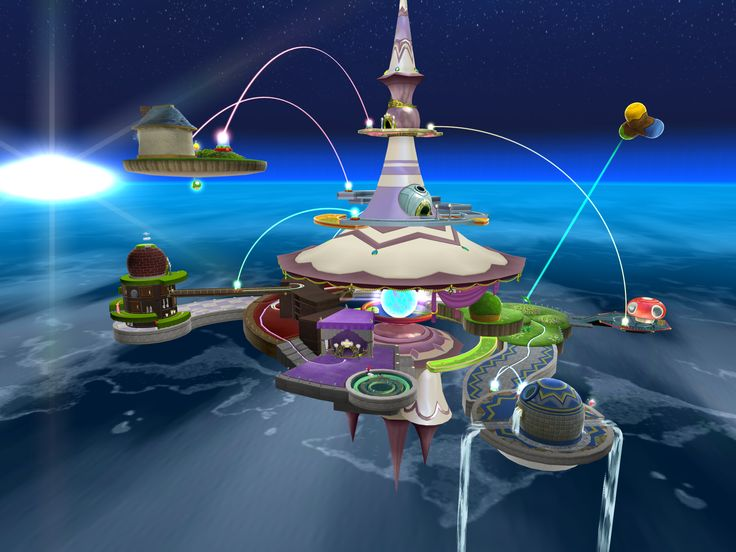

Island Delfino from Mario Sunshine

Sand Kingdom from Mario Odyssey

Snowpeak from the Legend of Zelda Twilight Princess

Luigi's Mansion, Mansion

Island from Wii Sports Resort

Hyrule Castle from the Legend of Zelda Twilight Princess

Outset Island from the Legend of Zelda windwaker

Comet Observatory from Mario Galaxy